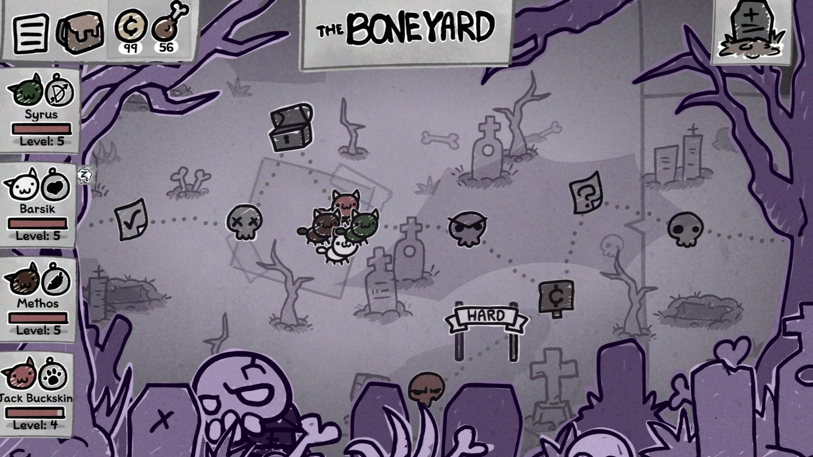
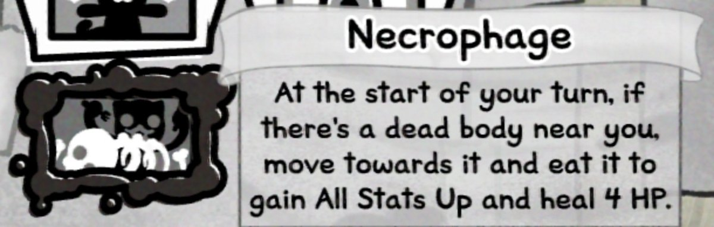
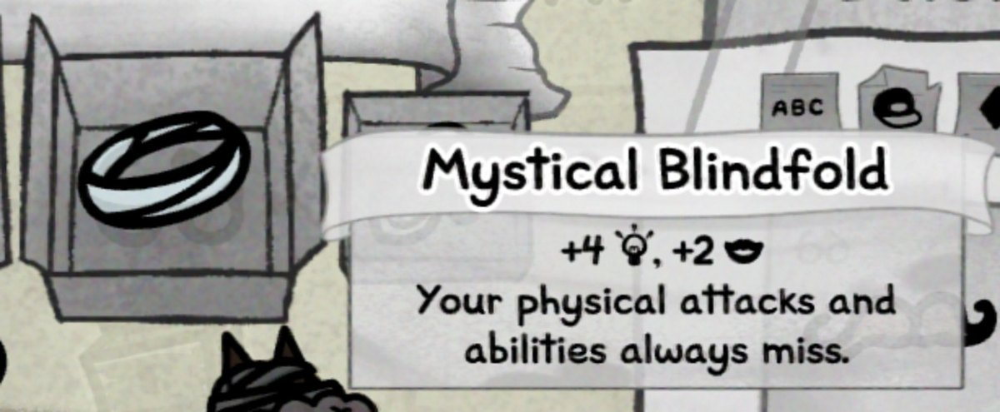
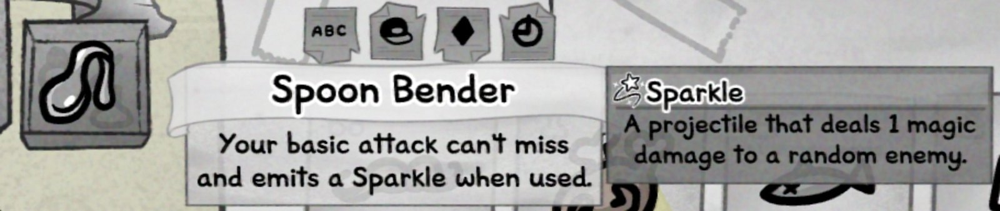

Game notes
Meowgenics: Necrophage + Mystical Blindfold
My cleric had one job: keep the party alive. Unfortunately, he also had an uncontrollable appetite for the bodies he was supposed to revive. Fixing him took a blindfold, a bent spoon, and a lesson in effect priority.
A perfectly normal cat outing
Meowgenics is a cat-themed roguelike with a wonderfully vile art direction. You run a cat-lady household, breed increasingly strange felines, and send four of them on turn-based outings to collect food. Each cat can pick up class abilities, mutations, disorders, and other traits that pull a build in unexpected directions.
My party for this trip through the Boneyard was:
- SyrusGreen · Hunter
- BarsikWhite · Cleric
- MethosBrown · Druid
- Jack BuckskinRed · Fighter

The problem: my cleric ate the patients
Barsik had the Necrophage disorder. At the start of his turn, a nearby dead body would make him move toward it, eat it, gain All Stats Up, and heal four HP.

So the cat responsible for reviving and healing the dead bodies sprinted toward them and ate them. Great.
Necrophage might be a solid survival tool on another class, but it made Barsik all but useless as a cleric. Every corpse he consumed was one less party member he could bring back.
The first fix fixed too much
Then the universe corrected itself. I found a Mystical Blindfold, an item that makes physical attacks and abilities always miss. Eating a body certainly sounded physical, so I equipped it and tested the interaction.

It worked. The game treated Necrophage as a physical ability, so Barsik could no longer eat the party's casualties. There was only one problem: the blindfold was equally committed to making his physical healing attack miss. I had saved the patients from Barsik, but not yet made him capable of helping them.
Enter the Bent Spoon
One more item put a finger on the scale of justice. Well, not a finger: a Bent Spoon. Its Spoon Bender effect says that the wearer's basic attack cannot miss and emits a Sparkle when used.

The positive effect won. Spoon Bender overrode the blindfold for Barsik's basic attack, allowing it to connect again. The blindfold still blocked the Necrophage behavior because the spoon only protects the basic attack, not every physical ability.
The final interaction
- Necrophage tries to move Barsik toward a corpse and eat it.
- Mystical Blindfold makes that physical ability miss.
- Spoon Bender separately guarantees that Barsik's basic attack hits.
Put into an extremely scientific cleric-competency model, the build's trajectory looks like this: Necrophage wipes out Barsik's early healing gains, the Mystical Blindfold restores most of his usefulness, and Spoon Bender pushes him to a final score of 19.

A very Meowgenics solution
The result is delightfully specific: Barsik cannot eat bodies, but he can use his basic attack again. Clerics can also pick up plenty of non-physical abilities, so the blindfold's downside is manageable beyond that one rescued action.
It is the kind of emergent fix that makes a systems-heavy roguelike so satisfying. A disorder ruined a class role, one item suppressed the disorder, and another item carved out the exact exception the build needed. The healer is back in business—and the corpses are finally safe.